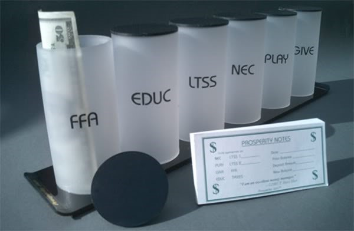
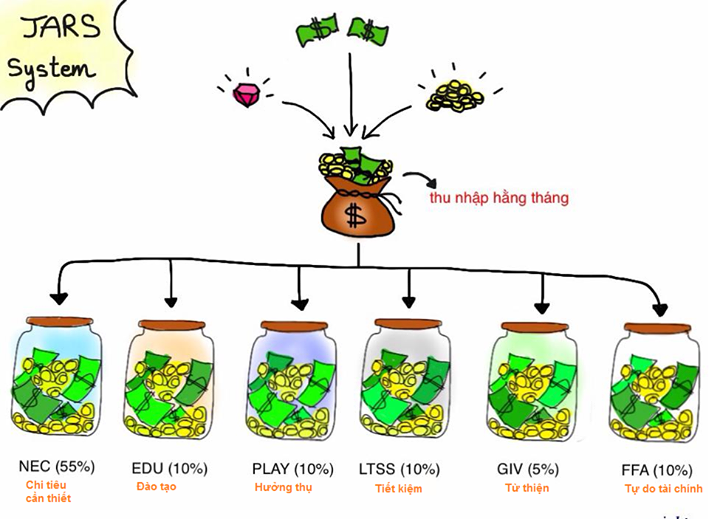

Money Manager
GNU Cash, Money Lover
What type of transaction: clothes, medical, transportation, food, relax, tax, Internet, hosting, salary,... (can add later)
Loan (lend, borrow)
Report
Not manage software (input --> output) but reactive software (warning, real-time)
References
luôn giữ đúng nguyên tắc giữ 10% số tiền bạn đang có cho vào quỹ nhé.
+ 55% cho tài khoản bắt buộc, nhu yếu phẩm (Tiền nhà, điện nước, gas, mắm
muối,..)
+ 10% cho các tài khoản Tiết kiệm dài hạn để chi tiêu
+ 10% cho tài khoản tự giáo dục, học hành của bạn (Mua sách, vở, tài
liệu,..)
+ 5% Tài khoản cho đi của bạn
MB Bank account:
Name:
Nguyễn Văn Huyên
Account number:
0050.1093.17001
Bank:
MB
Branch:
Trần Duy Hưng
-----------------
Mọi việc dễ dàng hơn khi có mục tiêu
Nếu bạn không có ý định tiết kiệm hay tích lũy một khoản tiền để thực hiện các kế hoạch tài chính lớn trong tương lai, thì bạn sẽ rất dễ sử dụng hết số lương hàng tháng của mình. Đặt ra mục tiêu tài chính ngay khi bạn bắt đầu có thu nhập chưa bao giờ là thừa thãi cả. Nhưng mục tiêu quá cao cũng có thể khiến bạn chán nản. Bạn vẽ ra một kế hoạch thật hoành tráng và đáng mơ ước, nhưng càng thực hiện, bạn càng cảm thấy bất khả thi. Cuối cùng, bạn cũng không đủ kiên nhẫn để theo đuổi mục tiêu do chính mình đặt ra và quyết định từ bỏ.
Nhiều người nghĩ đến việc tiết kiệm nhưng không tự đặt cho mình mục tiêu cụ thể mà đơn giản hành động giống bạn bè, tuy nhiên không có mục tiêu rõ ràng, thường họ sẽ không tiết kiệm được gì.
Mục tiêu rất quan trọng. Một điểm chung của những người thành công trong việc quản lý tài chính cá nhân, đó là họ đều có những mục tiêu thích hợp, định hướng rõ ràng trong cuộc sống. Từ đó, họ vạch ra kế hoạch chi tiêu hợp lý, kiên trì theo đuổi nó và tích lũy để thực hiện các kế hoạch tài chính trong tương lai. Hãy đặt ra những mục tiêu phù hợp với bản thân ngay từ bây giờ để bắt đầu xây dựng một nguồn tài chính mạnh mẽ và vững chắc.
Gạt bỏ suy nghĩ sai lầm
“Tôi sẽ quản lý khi có nhiều tiền” là một sai lầm thường thấy và cần phải bị gạt bỏ trước khi nói về quản lý tài chính. Lập luận này không khác gì việc “tôi sẽ chăm chỉ học tập khi tôi đạt được những điểm 10”. Nếu bạn không biết quản lý tốt những gì bạn đang có, cuộc sống sẽ chẳng bao giờ cho bạn thêm cái gì.
Có người lại nói: “Quản lý tiền khiến tôi cảm thấy không tự do”- tự do về tài chính là tự do lớn nhất, hỗ trợ cho tất cả mọi loại tự do khác. Nếu không có tự do về tài chính, liệu bạn có đủ tiền và thời gian để thực hiện ước mơ? Xin hãy tin ở tôi! Việc quản lý tài chính mỗi ngày sẽ cho bạn những cảm giác vô cùng tuyệt vời, là 1 thói quen vô cùng tốt.
Các lý do có thể khiến bạn không thể cắt giảm chi tiêu
1. Đặt mục tiêu quá cao
Đầu tháng bạn hừng hực khí thế đặt chỉ tiêu cắt giảm đến 40% chi tiêu hàng tháng của mình, sau đó dần dần bạn sẽ thấy rằng mình không thực hiện được việc đó. Và từ đó trở đi, bạn sẽ không chấp hành nghiêm chỉnh việc tiết kiệm này nữa.
2. Đặt mục tiêu không cụ thể
Bạn chỉ đặt mục tiêu chung chung là được bao nhiêu hay bấy nhiêu. Không đề ra mục tiêu cụ thể sẽ làm cho bạn không thực hiện nghiêm chỉnh và làm giảm hiệu quả.
3. Lười ghi chép lại các chi tiêu trong ngày
Khi bạn không cập nhật thường xuyên những khoản chi tiêu trong ngày sẽ khó nắm bắt được tình hình tài chính và cản trở việc thực hiện kế hoạch tiết kiệm của mình.
4. Không quản lý dòng tiền
Điều này sẽ dẫn đến tình trạng cuộc sống bạn khó khăn vì đôi khi phải lựa chọn giữa tiết kiệm và những việc quan trọng tốn nhiều tiền tại một thời điểm nào đó.
Phương pháp Quản lý Tài chính cá nhân JARS được phát minh bởi T. Harv Eker (tác giả quyển Secret of Millionaire Mind) là bậc thầy về diễn thuyết, đã thiết kế hàng chục khoá học ngắn và dài hạn về phát triển cá nhân. Ông được mệnh danh là “Trainer Of Trainers”
Phương pháp JARS là phương pháp những cái hũ, bởi tiền của bạn sẽ được chia đều cho 6 cái hũ tượng trưng cho 6 tài khoản cá nhân. Hãy hình dung khi bạn nhận được thu nhập mỗi tháng (có thể là tiền lương, hoặc tiền từ bố mẹ, hoặc bất cứ nguồn thu nào khác, ít hay nhiều không quan trọng). Số tiền đó sẽ được chia cho các hũ được dánh dấu như sau với số phần trăm tương ứng.
Khi bạn nhìn vào những tài khoản trên, có thể bạn sẽ thắc mắc là có vẻ 1 số tài khoản nó hơi trùng lập với nhau, nhưng thật sự thì mỗi tài khoản đều có mục đích và tác dụng riêng đấy.
Đây là tài khoản tiêu dùng cho những chi phí cần thiết của bạn, như là ăn uống, đi lại, kể cả mua sắm những thứ cần thiết cho bản thân. Có thể bạn sẽ thắc mắc là nhu cầu mỗi người khác nhau, liệu 55% có thể đủ hay không. Thật sự là thống kê cho thấy thì 55 – 60% này sẽ là đủ đối với thu nhập của bạn, nếu bạn thấy bạn cần nhiều hơn nữa, chứng tỏ việc chi tiêu của bạn chưa hợp lý.
Tác dụng của tài khoản này là để cho bạn biết được giới hạn chi tiêu của mình là bao nhiêu, từ đó bạn sẽ thay đổi lối sống cho phù hợp với điều kiện của mình. Còn khi bạn chưa bao giờ lên kế hoạch rõ ràng, bạn sẽ thường xuyên chi tiêu vô tội vạ và lấn vào các tài khoản khác.
Tài khoản này bạn sẽ phải để dành một khoảng thời gian khá lâu để cho những chi tiêu lớn trong tương lai. Ví dụ như khi còn đi học, bạn muốn sắm chiếc điện thoại mới, hay mua chiếc laptop, thì đây là khoản mà bạn để dành cho những chi tiêu đó (vì nó lớn đối với bạn). Hoặc khi bạn đã đi làm, thì khoản này để cho bạn dành dụm mua những món lớn hơn như là sắm xe, mua nhà, dành dụm cho đám cưới v.v…
Tác dụng của tài khoản này là để bạn thấy rõ được mục đích mình đang nhắm tới là gì, và sẽ tiết kiệm tiền từ từ cho việc đó. Những khoản chi tiêu lớn như này, bạn cần có kế hoạch lâu dài chứ không nên để tới lúc đó mới mang hết tiền của mình ra mua, khi đó sẽ ảnh hưởng tới những khoản chi tiêu khác của bạn.
Đây là tài khoản giáo dục cho chính bạn, tức là để cho bạn nâng cấp bản thân. Tài khoản này có thể được chi tiêu vào các khoản như tham gia các khoá học nâng cấp bản thân, mua sách hoặc tài liệu học tập, … Và hãy nhớ đây là tài khoản giáo dục cho chính bạn, bạn phải chi tiêu hợp lý để nâng cấp bản thân liên tục, có như vậy bạn mới đảm bảo được giá trị bản thân.
Tác dụng của tài khoản này là bắt bạn phải liên tục đầu tư vào chính bản thân mình, bởi đây chắc chắn sẽ là khoản đầu tư sinh lời nhất của bạn sau này.
Có thể khái niệm này rất mới đối với bạn, nói đơn giản thì đây là tài khoản dùng để đầu tư sinh lợi nhuận. Có nhiều cách để đầu tư nhưng ví dụ bạn có thể dùng để chơi chứng khoán, hoặc để dành khi nào nhiều nhiều có thể hùn vốn làm ăn với bạn bè, hay mở một cửa hàng nhỏ, thậm chí là mở công ty.
Tác dụng của tài khoản này là để cho bạn lúc nào cũng có sẵn 1 số tiền cho những mục đích đầu tư trong tương lai, chứ không phải tới lúc cần bạn mới đi gom tiền. Và lý do mà tên tài khoản này là Financial Freedom (Tự do tài chính) là bởi vì chỉ có đầu tư (hợp lý và hiệu quả) thì mới có thể giúp bạn làm giàu, và đạt được tới Financial Freedom. Khi mà tiền lợi tức từ những thương vụ đầu tư của bạn đủ để chi trả hết các khoản chi tiêu trong cuộc sống của bạn, thì lúc đó bạn không cần phải đi làm mà vẫn có thể sống thoải mái.
Đây thật sự là tài khoản để bạn xài để thỏa mãn nhu cầu xa xỉ của bản thân. Có thể bạn cần một cái áo mới (chỉ là tại vì bạn thích, chứ không phải vì nhu cầu), mua đĩa game, đĩa nhạc mới. Thậm chí là để đi du lịch, ăn uống bù khú với bạn bè. Và hãy nhớ, đây là khoản tiêu xài BẮT BUỘC, cho dù bạn đang cực kỳ dè sẻn chi tiêu, nhưng phải luôn để ra một khoản cho chính bản thân bạn. Khoản này có thể gom lại vài ba tháng để xài một lần, nhưng bạn ko được để đó quá lâu.
Tác dụng của tài khoản này là để cho bạn tự thưởng cho bản thân (sau một thời gian cực khổ kiếm ra tiền), và chỉ có bạn được hưởng thụ tiền của mình kiếm ra thì bạn sẽ có nhiều động lực hơn nữa để kiếm thêm nhiều tiền.
Đây là tài khoản để bạn đem cho người khác, có thể là đi quyên góp từ thiện, giúp các trẻ em nghèo. Có rất nhiều những hoạt động mà bạn có thể dành số tiền này vào. Nhưng bạn luôn phải nhớ dành ra 1 khoản để giúp đỡ người khác.
Tác dụng của tài khoản này là theo Law Of Attraction khi bạn cho đi, bạn sẽ được nhận về … khi giúp được người khác, tất nhiên bạn sẽ vui hơn nhiều. Nhưng đối với chính bản thân bạn thì nó cũng sẽ giúp cho bạn nhận được những món tiền nhiều hơn trong tương lai đấy nhé.
LƯU Ý:
- Bạn hãy dành ra thời gian để ngồi tình toán lại tiền bạc cá nhân của chính mình.
- Đầu tiên bạn hãy ghi ra số tiền mà bạn sẽ có mỗi tháng là bao nhiêu, rồi chia đều cho các tài khoản theo tỷ lệ nêu trên.
* Đối với NEC 55% (Tài khoản chi tiêu cần thiết), hiện giờ bạn đã biết giới hạn chi tiêu cần thiết hàng tháng của mình là bao nhiêu rồi, bạn có thể so sánh với trung bình tiêu xài của bạn từ trước đến giờ, nếu nó nhiều hơn số tiền bạn có trong NEC, thì hãy bắt đâu ngồi suy nghĩ để cắt giảm chi tiêu của mình. Chắc chắn khi ngồi tính lại, bạn sẽ thấy được những khoản không cần thiết mà bạn có thể bỏ đi, và nhất là khi bạn đã có 1 con số cụ thể làm giới hạn, bạn sẽ rất dễ dàng điều chỉnh lại thói quen tiêu xài.
* Đối với LTSS 10% (Tài khoản tiết kiệm tiêu dùng cho tương lai), bạn hãy đặt cho mình một mục tiêu trong tương lai là bạn sẽ phải mua cái gì đó có giá trị lớn. Rồi từ LTSS bạn có mỗi tháng, hãy tính thử trong bao lâu bạn sẽ có đủ tiền để mua, từ đó hãy đặt quyết tâm với bản thân để hướng tới mục tiêu đó.
* Đối với EDU 10% (Tài khoản giáo dục), nếu trước mắt bạn không có những dự tính lớn lao nào (như đóng tiền để tham dự những khoá học nọ kia) thì hay nghĩ xem những sách vở tài liệu gì bạn có thể mua được để đọc, tìm tòi, học hỏi và nâng cấp bản thân (ví dụ như mua cuốn Tôi tài giỏi chẳng hạn). Hãy nhớ, bây giờ bạn đã có một khoản cho chuyện đó, nên bạn phải tự thúc đẩy chính bản thân mình tìm tòi học hỏi nhiều hơn nữa. Kiến thức không bao giờ miễn phí, bây giờ bạn đã có tiền, tại sao ko đi mua thêm kiến thức cho mình?
* Đối với FFA 10% (Tài khoản tự do tài chính), hãy nhân số tiền mà mình có hàng tháng với 6 tháng, 12 tháng hoặc 36 tháng. Mục tiêu là để bạn sẽ có được trong đầu số tiền mình có thể dùng để đầu tư trong giai đoạn 6 tháng sắp tới, 1 năm hoặc 3 năm sắp tới là bao nhiêu. Khi đã có con số trong đầu, bạn sẽ dễ dàng kiếm được chỗ thích hơp để đầu tư số tiền đó. Còn hiện tại thì có thể bạn nên ra mở một tài khoản tiết kiệm ở ngân hàng, mỗi tháng bạn sẽ bỏ vào đúng số tiền trong FFA vào đó. Nếu bạn chưa có dự định đầu tư trong tương lại gần, bạn có thể gửi tiết kiềm dài hạn để có được lãi suất cao hơn.
* Chắc chắn đa số mọi người sẽ rất hứng thú với PLAY 10%, bởi vì đây là tài khoản để bạn hưởng thụ cho bản thân mình. Hãy tiêu xài cho nó thật hợp lý (bởi nó cũng không quá nhiều), và cho đáng công sức mình đã bỏ ra (bởi vì nó sẽ đủ để bạn tự thưởng cho chính mình). Nếu bạn có dự tính du lịch, hoặc cần nhiều hơn khoản PLAY cho phép hàng tháng, bạn có thể để dành vài tháng cho tới khi đủ rồi bạn sẽ xài chúng 1 lần, nhưng phải nhớ là khoản này phải được chi, bạn đừng nên quá tiết kiệm đối với bản thân mình.
Bản thân Energy thì thích quỹ này nhất. Đây là quỹ cho việc ĂN CHƠI và phải theo đúng nguyên tắc sau đây: TIÊU HẾT SẠCH và TIÊU HOÀNH TRÁNG.
Con người chúng ta có phần Con và phần Người, vì chúng ta luôn muốn phát triển phần Người, luôn cố gắng hoàn thiện bản thân mà áp chế phần Con, nên lúc phần Con nó bùng nổ ra thì còn nguy hiểm hơn.
Quỹ này chính là để nuôi dưỡng phần Con của bạn một cách đúng mức. Về cách ăn chơi thì: Đừng ăn, chơi ở mấy chỗ bình thường. Vì chỉ khi ăn chơi ở những nơi sung sướng nhất, hoành tráng nhất, thì tiềm thức của bạn mới kích thích, mong muốn những lần ăn chơi hoành tráng hơn, khiến cho bạn có thể kiếm nhiều tiền hơn. Bản thân Energy thì đã có trải nghiệm nhiều lần với những lần ăn chơi thế này. Nhưng hãy nhớ, chỉ ăn chơi trong phạm vi 10% thôi bạn nhé.
* Và GIVE 5% thì là khoản để bạn có thể làm những việc từ thiện, nhưng chưa bao giờ thấy đủ tiền, còn bây giờ bạn đã có một khoản riêng, hay đi giúp người khác, có thể là bạn bè xung quanh, có thể là người xa lạ, nhưng mà sự giúp đỡ nó sẽ nối tiếp và nhân đôi từ người này qua người khác, hãy là người gieo những hạt giống đầu tiên.
- Không biết nói “không” trước những khoản chi không cần thiết như cả tuần đi vũ trường dù không biết nhảy.
- Không có một kế hoạch chi tiêu rõ ràng, cái gì cũng muốn mua nhưng khi ngẫm lại thì thấy toàn mua những thứ không cần thiết.
- Không ghi chép các khoản chi để theo dõi.
- Không biết giá cả thị trường nên thường bị mua hớ.
- Cho đứa bạn đang nợ chồng chất vay tiền.